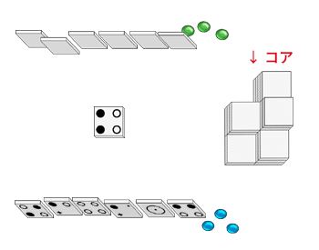
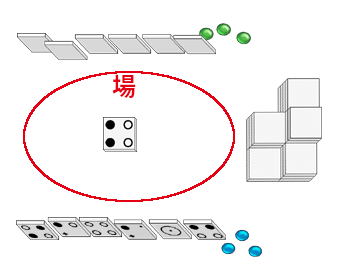
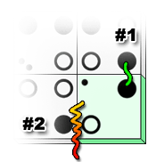

1 人用のソリティア パズルまたは 2 人用の対戦ゲーム
(version 1.2.1) Feb. 24, 2004 © Jean-Francois Lassonde
シャッフルされて伏せられたまま積まれたタイルの山。全てのタイルの供給元。
コアから引いた伏せられたままの自分専用のタイルの山。後述する条件を満たさないとコアから引けない。伏せられたままなので手札になるまでどのようなタイルなのかわからない。上の図ではまだ自分の山札はできていない。最終得点源の 1 つ。
最初に配られたタイルとゲームの途中で自分の山札から引いたタイル。最初に配られる 6 枚のタイルを除きタイルは、コア → 自分の山札 → 手札、という具合にやってくる。最終得点源の 1 つ。
タイルを並べてゆく場所
マイクロプルや触媒、空白が描かれている。
場のタイル上のマイクロプルグループに乗せる。マイクロプルグループについては後述する。
タイルに描かれている●と○。
場に出されたタイルによりひとかたまりになったマイクロプルの集まり。
右図の赤、青、黄で塗りつぶされているところが閉じており (閉じているとは何かについては次項を参照)、それぞれ閉じたマイクロプルグループをつくっている。
閉じたマイクロプルグループにマーカーが置かれると最終得点源の 1 つになる。
右図で薄緑色のタイルがプレイされる前はまだ閉じたマイクログループは 1 つもできていない。
薄緑色のタイルがプレイされることで、白のマイクロプルグループが白のマイクロプル以外のもので囲まれる。
そのためこれ以降どんなタイルを置こうとも白のマイクロプルグループに白のマイクロプルを隣接させることができなくなり、この白のマイクロプルグループがこれ以上大きくなることはなくなる。
この状態をマイクロプルグループが閉じていると呼ぶ。
この閉じているマイクロプルグループにマーカーが置かれると前述の通り最終得点源の 1 つになる。
タイルに描かれている点と＋。マイクロプルと接すると点の数だけコアから自分の山札にタイルを引くことができる。タイルをコアから引くときは伏せたままでなければならない。＋がマイクロプルと接するともう 1 度プレイすることができる。
以下の 3 つの方法により得点を得、相手の得点を上回ると勝利する。
最初のプレイヤーをランダムに決める。
最初のプレイヤーから以下の 3 つのうちのどれかを実行することを繰り返す。パスはできない。
以下のいずれかの場合にゲームは終了する。
タイル同士は下図の #1 のように必ず最低一組の同じ種類のミクロプル同士が接していなければならない。
上図の #2 のように異なる色のマイクロプルは接してはいけない。なので上図の薄緑色のタイルは実際には図のようには置くことができない。タイルを 90 度時計回りに傾けると白のマイクロプルが接し、黒のマイクロプルはどこにも接せず、触媒の点が上のタイルの黒のマイクロプルに接するために置くことができるようになる。
タイルを場に置くことができた場合、置いたタイルのマイクロプルや触媒が隣接タイルの触媒やマイクロプルに接していないかチェックする。このチェックをなせずるのかというと、マイクロプルと点の触媒に接していた場合に点の数だけコアから自分の山札にタイルを伏せた状態で引くことができるから。
似たような条件で＋の触媒がマイクロプルに接する場合は、プレイヤーはもう 1 度プレイ (1 度のみの連続プレイ) をすることができる。
準備中
マイクログループの上にマーカーを置くとそのマイクロプルグループが確保される。マーカーを置くとその取り消しはできず後で回収することもできない (カルカソンヌのミープルのようには回収されないしできない)。
確保したマイクロプルグループが閉じているなら、用語のマイクロプルグループの項で触れたように、そのマイクロプルグループに含まれるマイクロプルの数が全て自分の得点となる (ビッグマイクロプルは 1 点として計算する)。
しかしマイクロプルグループが閉じていなければそのマイクロプルグループは得点とはならない。プレイヤーは自分の手番のときに好きなマイクロプルグループにマーカーを置くことができる。
とはいえ例外もある。自分の手番の前にすでにマーカーが置かれていてすでに確保されているマイクロプルグループにはマーカーを置くことができない。
自分の手番でまだ誰も確保していない閉じたマイクロプルグループがある場合、そのマイクロプルグループにマーカーを置いて確保することができる。もちろんそのマイクロプルグループは自分の得点となる。
まだ閉じていない複数のマイクロプルグループ上にそれぞれ異なるプレイヤーのマーカーが置かれているものとする。
プレイが進んだ結果それらのマイクロプルグループが 1 つに統合される場合がある。それらのマイクロプルグループは統合はされるが、マーカーによる確保は帳消しになり誰の得点源にもならない死んだマイクロプルグループになる。死んだマイクロプルグループは誰にも確保されておらず誰も確保できないマイクロプルグループになる。
このルールを応用して、相手のマーカーを乗せたマイクロプルグループに自分のマーカーを乗せたマイクロプルグループを統合させて相手のマイクロプルグループが相手の得点になるのを妨害する、ということもできる。もちろんその際、貴重な自分のマーカーを 1 つかそれ以上消費することになる。
まだ閉じていない複数のマイクロプルグループ上にそれぞれ自分のマーカーが置かれているものとする。
プレイの結果それらのマイクロプルグループが統合された場合、そのマイクログループが最終的に閉じれば自分の得点となる。ただしマーカーが複数乗っていても得点がマーカーの数だけ乗算されるというようなことはなく、マーカーが 1 つの場合と同様の得点計算となる。
micropul はネット上でボードゲームのカルカソンヌとの類似性がよく指摘されている。もしかすると作者はカルカソンヌを軽量でシンプルにするのを目的にデザインしたのかもしれないが、作者はそのようなことを一切公言しておらずそれらはまったく想像の域を出ない。
ことの真偽は定かではないし、あまり重要だとも思えないが micropul がカルカソンヌへのいい橋渡しになるのは間違いなさそうである。micropul のプレイ感が気に入ったならカルカソンヌをプレイすることもお勧めしたい。